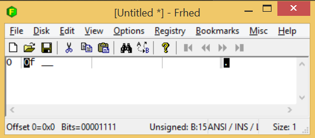
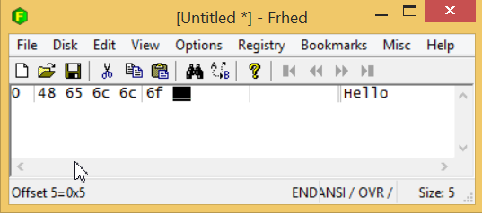
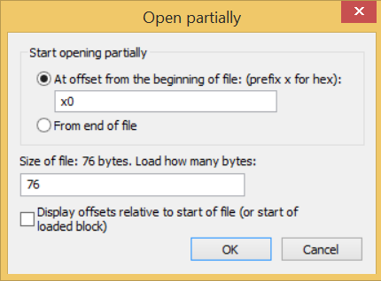
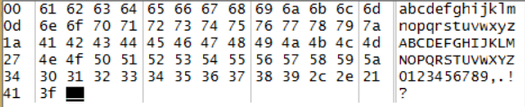
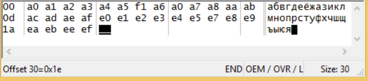
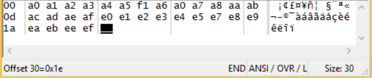
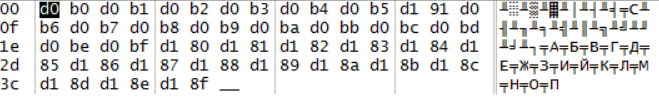

<!doctype html>
<html>
	<head>
		<meta charset="utf-8">
		<meta name="viewport" content="width=device-width, initial-scale=1.0, maximum-scale=1.0, user-scalable=no">

		<title>Инструменты. Кодировки</title>

		<link rel="stylesheet" href="../dist/reset.css">
		<link rel="stylesheet" href="../dist/reveal.css">
		<link rel="stylesheet" href="../dist/theme/beige.css" id="theme">

		<!-- Theme used for syntax highlighted code -->
		<link rel="stylesheet" href="../plugin/highlight/github.css" id="highlight-theme">
	</head>
	<body>
		<div class="reveal">
			<div class="slides">

                <section data-markdown data-separator="!~~~!" data-separator-vertical="~~~" > 
<script type="text/template">

## VS code

~~~

### Назначение

Visual studio code (VS code) предназначен для редактирования текстовой информации — исходных кодов программ, сайтов, документов&nbsp;и&nbsp;др.

Аналоги: atom, sublime, notepad++, vim.

~~~

### Информация

- [Сайт](https://code.visualstudio.com/)
- [Описание](https://ru.wikipedia.org/wiki/Visual_Studio_Code)
- [Настройка и применение](https://medium.com/@p1t1ch/visual-studio-code-настройка-и-применение-часть-1-7f1a26806522)

~~~

### Activity bar


~~~

### Editors


~~~

### Editor layout


«View–Editor layout»

~~~ 

### Status bar


~~~

### Сommands

Панель команд вызывается сочетанием клавиш ```Ctrl-Shift-P```, после чего набирается имя команды.

С командами рекомендуется разбираться по мере необходимости, запоминая сочетания клавиш для часто используемых команд.

!~~~!

## HEX редактор

~~~

### HEX

Hex (hexadecimal) — шестнадцатеричная система исчисления.

| Bin  | Hex | Bin  | Hex | Bin  | Hex | Bin  | Hex |
|------|-----|------|-----|------|-----|------|-----|
| 0000 | 0   | 0100 | 4   | 1000 | 8   | 1100 | C   |
| 0001 | 1   | 0101 | 5   | 1001 | 9   | 1101 | D   |
| 0010 | 2   | 0110 | 6   | 1010 | A   | 1110 | E   |
| 0011 | 3   | 0111 | 7   | 1011 | B   | 1111 | F   |

~~~

### HEX числа



~~~

### HEX текст



~~~

### Фрагмент файла



!~~~!

## Кодировки

~~~

### ASCII



~~~

### Управляющие символы

| Код | Название        | Клавиатура | ESC |
|-----|-----------------|------------|-----|
| 7   | BELL            | ^G         | \a  |
| 8   | BACKSPACE       | ^H         | \b  |
| 9   | TABULATION      | ^I         | \t  |
| 0A  | LINE FEED       | ^J         | \n  |
| 0B  | LINE TABULATION | ^K         | \v  |
| 0D  | CARRIAGE RETURN | ^M         | \r  |

~~~

### Русские символы





~~~

### Популярные кодировки

- OEM 866 — MS DOS
- Windows 1251 — Windows
- KOI-8 — Unix
- UTF-8 — Unicode 

~~~

### Unicode

абвгдеёжзийклмнопрстуфхцчшщъыьэюя (UTF-8)



~~~

### Символы Unicode

[List of Unicode characters](https://en.wikipedia.org/wiki/List_of_Unicode_characters)

- En dash (2013) –;
- Em dash (2014) —;
- Left-pointing double angle quotation mark (00AB)&nbsp;«;
- Right-pointing double angle quotation mark (00BB)&nbsp;»;

</script>
                </section>

			</div>
		</div>

		<script src="../dist/reveal.js"></script>
		<script src="../plugin/notes/notes.js"></script>
		<script src="../plugin/markdown/markdown.js"></script>
		<script src="../plugin/highlight/highlight.js"></script>
		<script src="../plugin/audio-slideshow/plugin.js"></script>
		<script src="../plugin/audio-slideshow/recorder.js"></script>
		<script src="../plugin/audio-slideshow/RecordRTC.js"></script>
		<script src="../plugin/menu/menu.js"></script>
		<script>
			Reveal.initialize({
				hash: true,
				plugins: [ RevealMarkdown, RevealHighlight, RevealNotes, RevealAudioSlideshow, RevealAudioRecorder, RevealMenu ],
				audio: {
					prefix: 'audio/',
 					suffix: '.webm;codecs=opus',
					autoplay: false,
					advance: -1,
				},
				menu: {
					custom: [{
						title: 'Home',
						icon: '<i class="fa fa-home">',
						src: '../menu.html'
					}]
				}
			});
		</script>
	</body>
</html>
